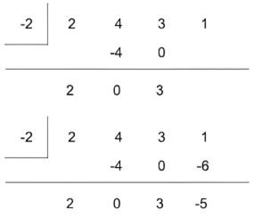

x - (c) —> x - (-2)
c = -2
Synthetic division starts with the number in this example … Then we line up the coefficients in the polynomial equation… First we can just bring down the first coefficient which is 2… Then we multiply the two at the bottom and two in the left corner to get 4. This will be used for the second coefficient… Then we add the second coefficient with the number below it which is 0… Then we repeat the steps until we get all the numbers at the bottom…  Now that all the numbers are found, in synthetic division, the last number which is 39 is the remainder which means it is going to be over x + 2…